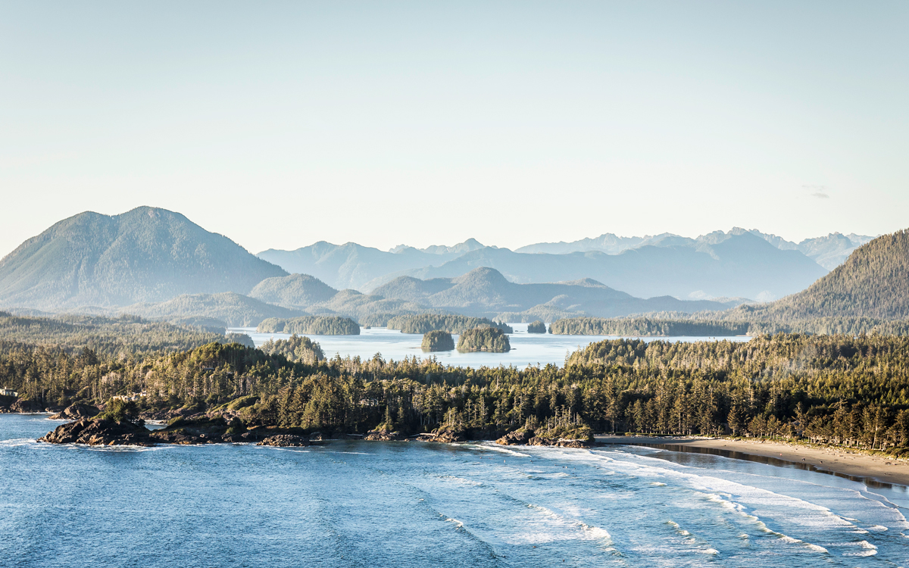
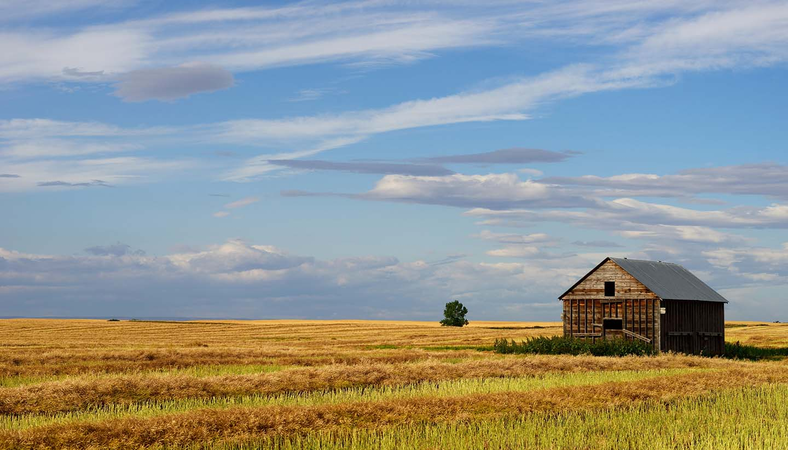
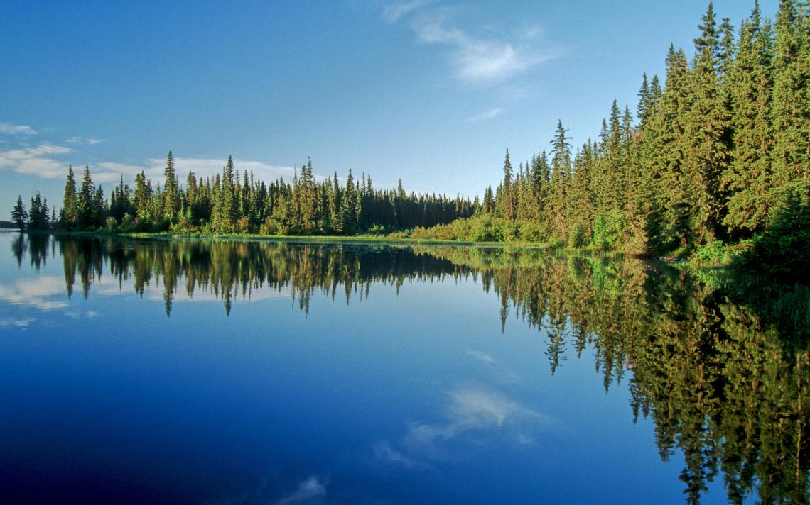
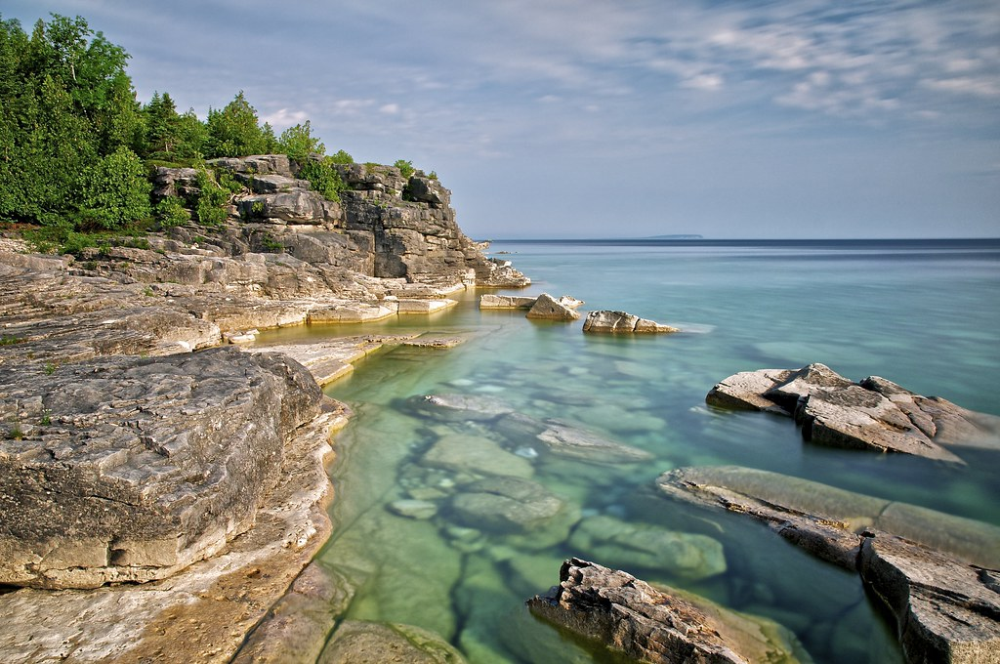
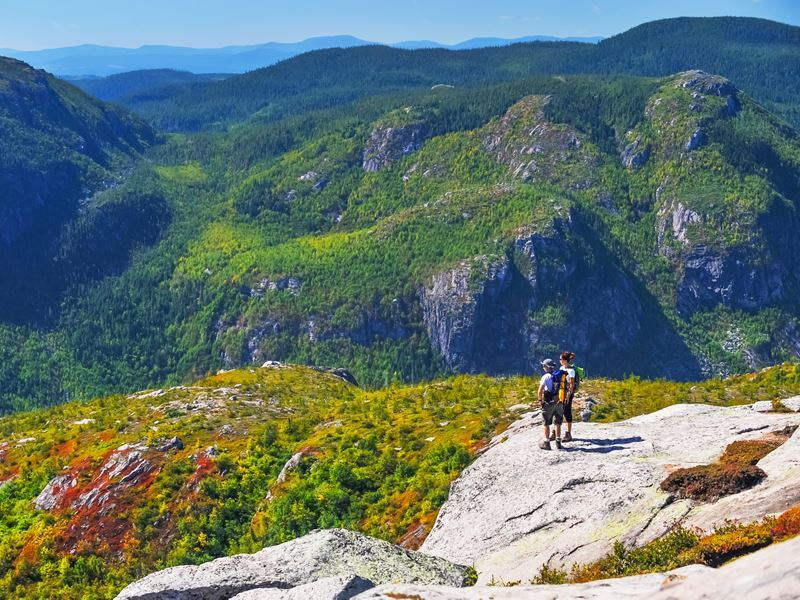
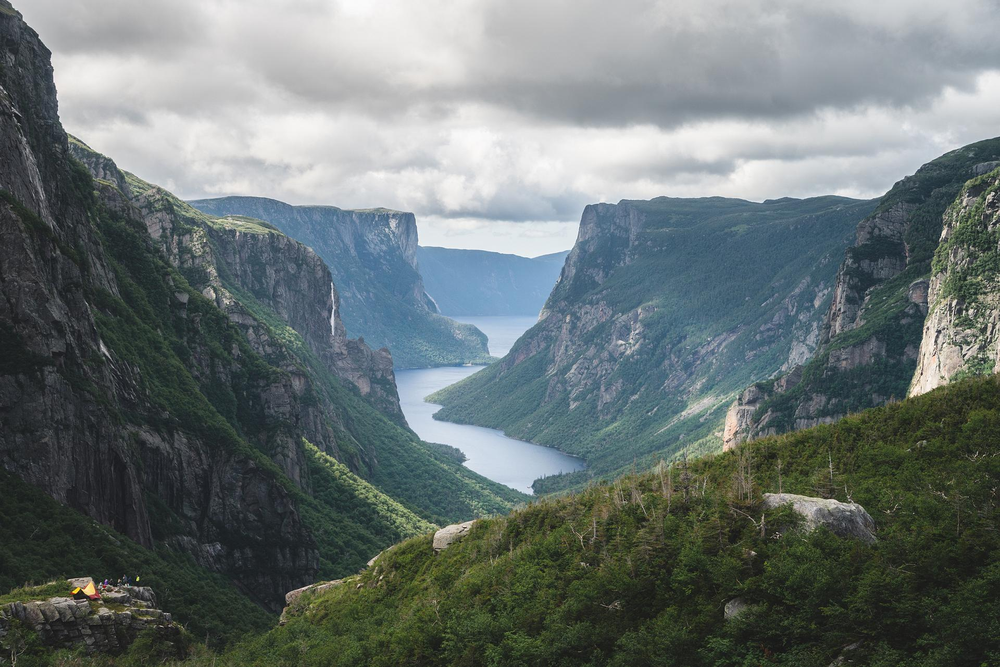
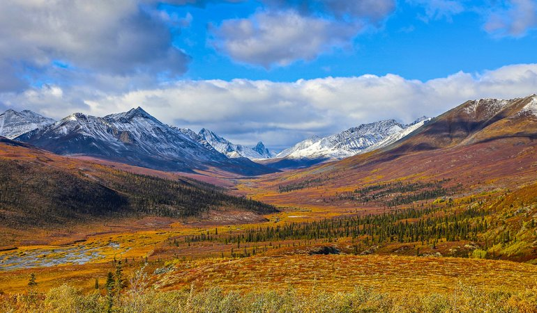
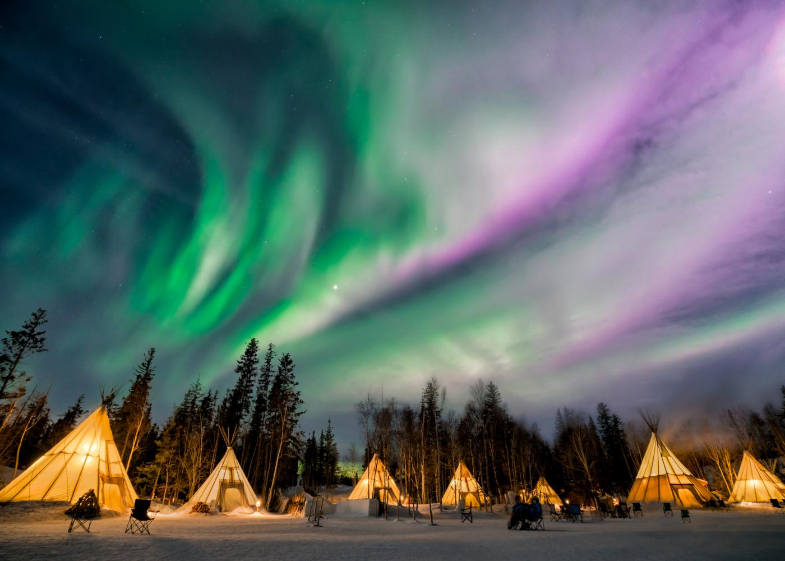
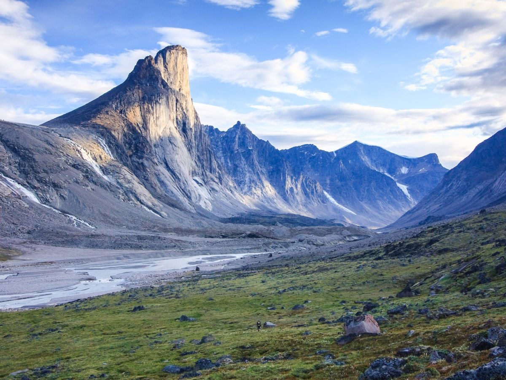

British Columbia
 Yoho National ParkNamed from a Cree expression of awe and wonder, Yoho lies on the western slopes of the Canadian Rocky Mountains. Vertical rock walls, waterfalls and dizzying peaks draw visitors from around the world. With exceptional hiking and sightseeing, the park offers a unique glimpse of Canada's natural wonders, from the secrets of ancient ocean life to the power of ice and water.
Pacific Rim National Park ReserveSuit up in your storm gear and watch the winter breakers crash on a rocky shoreline, or enjoy a summer stroll along an endless sandy beach. Step out of your kayak to be greeted by a First Nation Beach Keeper, or hear ancient legends told around the campfire by Guardians of the West Coast Trail. Pacific Rim National Park Reserve offers a West Coast experience steeped in nature and history.
Gwaii Haanas National Park Reserve and Haida Heritage SiteMassive moss-draped cedar and Sitka spruce tower above the Haida people's ancient carved poles and fallen longhouses on the lush rainforest islands of Gwaii Haanas. Skies fill with bald eagles, bears scavenge salmon on wild beaches and the ocean teems with breaching whales, porpoises and sea lions. Experience a rich, remote landscape steeped in spirituality, protected by Parks Canada and the Haida who draw cultural inspiration from this land of their ancestors.
Alberta
 Wood Buffalo National Park
Wood Buffalo National Park
As part of Canada's system of national parks and national historic sites, Wood Buffalo National Park of Canada is the country's largest national park and one of the largest in the world. It was established in 1922 to protect the last remaining herds of bison in northern Canada. Today, it protects an outstanding and representative example of Canada's Northern Boreal Plains.
Banff National ParkRocky Mountain peaks, turquoise glacial lakes, a picture-perfect mountain town and village, abundant wildlife and scenic drives come together in Banff National Park - Canada's first national park and the flagship of the nation's park system. Over three million visitors a year make the pilgrimage to the park for a variety of activities including hiking, biking, skiing and camping in some of the world's most breathtaking mountain scenery. Banff is part of the Canadian Rocky Mountain Parks UNESCO World Heritage Site
Jasper National ParkExtending over 11,000 square kilometres, it's the largest national park in the Canadian Rockies and part of UNESCO's Canadian Rocky Mountain Parks World Heritage Site. Find your connection to this special place by discovering one or all of the five spectacular regions, exploring the extensive trail network, visiting the famous red chair locations or participating in Parks Canada led programs and events. (Hint: the winter months are pretty spectacular!)
Saskatchewan
 Grasslands National ParkExperience the solitude of the wide-open plain as the prairie wind ripples a sea of grasses beneath the clear blue sky. Ride a traditional wagon, sit before a crackling campfire or spend the night beneath a canopy of brilliant stars. Travel back in time as you gaze at dinosaur bones, wander past tipi rings and catch a glimpse of a prairie homestead on the distant horizon.
Prince Albert National ParkWhether your idea of adventure is portaging a canoe between remote forest lakes or a day of pulse-racing waterskiing and wakeboarding, Prince Albert National Park satisfies with a mix of wilderness and accessibility. Hit the beach or get on the water in Waskesiu, the lakeside town that serves as the park's hub. Or leave civilization behind as you hike, explore backcountry lakes and maybe even spot wild bison.
Cypress Hills Interprovincial ParkAstride the border of Alberta and Saskatchewan, just 65km (40 mi) southeast of Medicine Hat, Cypress Hills Interprovincial Park rises up from the prairie on a plateau of 600 m (1,970 ft). In summer, water ski, swim and enjoy the beach. Camp in one of many forested campsites. Explore walking and mountain biking trails with breathtaking views of clear blue lakes. Experience special unexpected wildlife encounters. Come back in the winter to explore on snowshoes or cross-country skis. Book a countryside hut and experience the stillness of a winter night off the beaten path.
Manitoba
 Wapusk National ParkLet this expansive wilderness fill you with awe as you visit the remote subarctic that is Wapusk National Park. This 11,475 square kilometre park, at the transition between boreal forest and arctic tundra, protects one of the largest polar bear maternity denning areas in the world. Wapusk is located within the range of the Western Hudson Bay population of polar bears, which numbers approximately 1000 bears. Nature lovers watch for arctic foxes, arctic hares, wolves, caribou and wolverine as well as more than 200 bird species. Access to Wapusk is via authorized commercial tour operators in Churchill.
Nopiming Provincial ParkNamed from an Anishinabe word meaning "entrance to the wilderness". The park features towering granite outcrops, stands of black spruce and more than 700 lakes, several of them with fly-in or drive-in fishing lodges and outcamps. Its wildlife includes woodland caribou in season (seldom seen this far south). Campgrounds can be found at Beresford, Bird, Black lakes and Tulabi Falls.
Atikaki Provincial Wilderness ParkA spectacular 3,997 km² acres of rugged forest, rock outcrops, glassy lakes and wild rivers accessible only by air or canoe. Prehistoric rock paintings can be seen along the rivers. These fragile links with the past were created for ritual purposes hundreds of years ago. 300 to 500 caribou are in the park. The park is still virtually untouched by man, a true wilderness.
Ontario
 Pukaskwa National ParkWaves roll across immense Lake Superior and crash against a remote granite shore. Tracts of windswept spruce and pine reach beyond the horizon from towering cliffs and along secluded sandy beaches. Black bears feast on blueberry bushes; haunting loon song scores sunsets; moose stilt-walk across wetlands. And the culture of the Anishinaabe First Nations connects Pukaskwa National Park's wilderness to the powerful richness of an ancient human story.
Thousand Islands National ParkJourney to the picturesque granite islands and windswept pine trees of Thousand Islands National Park. Explore secluded bays by kayak or powerboat. Enjoy a day by the river or overnight in waterfront oTENTik accommodations at the park's mainland visitor centre. Discover rare species of turtles and birdlife alongside undulating hiking trails. Experience the magic of this captivating and historic wilderness, just a few hours from Toronto or Montreal.
Lady Evelyn-Smoothwater Provincial ParkLocated in the heart of the Temagami region and centre of a 2400km interconnected canoeing network, thousands of years old, this park has some of the best canoeing scenery in the world. Precambrian bedrock rises to a dome, forming the highest point in Ontario - Ishpatina Ridge - with several others, like Maple Mountain, in the top ten. The Lady Evelyn River is the centerpiece of the park, surrounded by some of the highest points in Ontario, with stands of towering pine and numerous waterfalls
Québec
 Hautes-Gorges-de-la-Rivière-Malbaie National ParkThe Park is one of Québec's most beautiful natural monuments. It was named after a series of valleys cut deep into a range of high mountains. Steep slopes, beautiful natural surroundings, and the unusual course of Rivière Malbaie make this site unique in Eastern Canada. This backcountry marvel in the heart of the Charlevoix World Biosphere Reserve can be reached via the picturesque village of Saint-Aimé-des-Lacs.
Jacques-Cartier National ParkJust 30 minutes from Québec City, you will fall under the spell of a vast mountainous plateau cut by deep valleys. Parc national de la Jacques-Cartier is host to one of the most beautiful glacial valleys in Québec, the spectacular Vallée de la Jacques-Cartier. The Jacques Cartier River, calm in some places and turbulent in others, has sliced a 550-metre-deep channel into the plateau. A coniferous forest dominates the high plateaus, and deciduous trees populate the deep valleys. Here, nature is both inspiring and serene.
Grands-Jardins National ParkIn the early 20th century, this area was already known for its incredible fishing opportunities. Visitors were struck by the carpets of ground lichen and the exceptional Arctic vegetation at this latitude. They thus named it the Grands-Jardins, the Great Gardens. Today, Parc national des Grands-Jardins is still visited by anglers and also by hikers, campers and vacationers. It has the privilege of forming one of the core zones of the Charlevoix Biosphere Reserve, a status granted to the region by UNESCO.
The Atlantic Provinces
 Gros Morne National Park, Newfoundland and LabradorAs the second-largest national park in Atlantic Canada and a UNESCO-listed World Heritage Site, this supernatural playground that's part of the Lone Range Mountains stretches over 1,805 square kilometres of Western Newfoundland. Lord of the Rings-like terrain aside, recent glacial action has resulted in even more incredible scenery such as alpine plateau, coastal lowlands, glacial valleys, sheer cliffs, waterfalls, pristine lakes, and freshwater fjords - all of which create an eye-popping landscape.
Prince Edward Island National Park, Prince Edward IslandDiscover the stunning beauty of the Island's North Shore on the seven supervised beaches and over 50 km of hiking and cycling trails in PEI National Park. In 1998, six kilometres of the Greenwich Peninsula were added to the Park to protect unique dune formations, rare plants and animals, as well as archaeological findings dating back 10,000 years. Fully serviced campgrounds can be found mere steps fom the ocean.
Fundy National Park, New BrunswickExperience the world's highest tides - not to mention pristine forests, deluxe campgrounds and a taste of Atlantic Canada culture - at Fundy National Park. Paddle in a kayak as the waters rise up to 12 metres or more. Walk the otherworldly sea floor at low tide. Or venture inland where trails lead to waterfalls deep in Acadian forests. With unique camping options - including yurts - and even regular music performances, Fundy is a Maritime treasure.
Yukon
 Kluane National Park and ReserveKluane - high in the mountains of southwest Yukon - is a land of extremes. The park is home to Canada's highest peak (5,959m Mount Logan), its largest ice field and North America's most genetically diverse grizzly population. Travellers from around the world come to traverse alpine passes on backcountry odysseys and raft past calving glaciers. With exceptional day hikes and highway-side scenery, Kluane awes from every angle.
Tombstone Territorial ParkTombstone Territorial Park's 2,200km² protect a unique wilderness of rugged peaks, permafrost landforms and abundant wildlife, all reflected in a rich First Nations culture. The park is a legacy of the Tr'ondëk Hwëch'in Land Claim Agreement and lies within their Traditional Territory.
The Dempster Highway bisects the park and provides an opportunity to view stunning arctic tundra landscapes and wildlife and access to hiking areas. The concentration of wide ecological niches has resulted in a diverse collection of flora and fauna uncommon at this latitude.
Remote and unspoiled Arctic wilderness, a First Nation's history dating back millennia and the setting for one of the planet's great animal migrations await the few who make the trek to Vuntut National Park. Vuntut National Park may be one of the most remote and least visited national parks in Canada, but it's far from unpopulated. Vuntut is the domain of the Porcupine caribou herd and half a million migratory birds, and is also the cultural homeland of the Vuntut Gwich'in people. In the Gwich'in language, vuntut means "among the lakes," a fitting moniker for this Arctic landscape, which is dotted by fertile wetlands, winding rivers, and rolling mountains.
Northwest Territories
 Nááts'įhch'oh National Park ReserveNááts'įhch'oh National Park Reserve is named after Nááts'įhch'oh the mountain - a powerful place for the people of the Sahtu. The name means "stands like a porcupine" in the Dene language, given to it because of its distinctive shape. Near the Yukon-Northwest Territories border, the park is in the traditional lands of the Shúhtaot'ine (Mountain Dene), and home to grizzly bear, Dall's Sheep, Mountain Goats and Woodland Caribou.
Nahanni National Park ReserveThe Cirque of the Unclimbables' granite spires rise out of the lush alpine meadow, at Náįlįcho (Virginia Falls) the South Nahanni River surges over a drop twice the height of Niagara Falls. Nahanni National Park Reserve, encompassing 30,000 square kilometers, is a designated UNESCO world heritage site. The Dehcho First Nations welcome adventurers to Nahʔą Dehé, land of peaks, plateaus and wild rivers.
Tuktut Nogait National ParkThe landscape and wildlife of the 18,890 sq km national park is seen by those privileged few willing to travel 170 kilometres north of the Arctic Circle. The landscape features rolling hills, three major rivers, steep canyons, waterfalls, rare Bluenose west caribou and the continent’s fiercest predators.
Nunavut
 Auyuittuq National ParkA zig-zag skyline of craggy granite peaks and glittering glaciers overlooks tundra valleys and steep-walled fiords whose winding waterways teem with narwhal and ringed seals, Auyuittuq is a diverse and grand-scale Arctic experience. Hike alongside icy, thundering streams and amid wildflower-dotted meadows. Traverse Akshayuk Pass, a natural corridor through a landscape of towering rock - a haven for experienced mountaineers and backcountry skiers. Spot snow geese, Arctic foxes, and human-shaped Inuksuit basking in Midnight Sun.
Kugluk/Bloody Falls Territorial ParkKugluk (Bloody Falls) Territorial Park is located 13 kilometres (six miles) southwest of Kugluktuk. The park features 25 acres of lush terrain alongside a narrow gorge on the Coppermine River where the water swiftly descends in a thundering cascade of churning rapids and twisting eddies. This special place, known as Kugluk in the local Inuinnaqtun dialect, has a rich and continuous history that is shared by the Dene and Inuit cultures and their ancestors dating back more than 7,000 years. The ancient travel corridor of the Coppermine River valley with its plentiful natural resources brought various cultures to Kugluk (Bloody Falls) for millennia. Fish heading upstream are forced into shallow channels at the falls, enabling people to easily catch them with traditional hooks and spears from the shore. The traditional campsite area located below the falls is called ‘Onoagahiovik,’ meaning ‘the place where you stay all night’ because the fishing is that good!
Ukkusiksalik National ParkPolar bears, grizzlies, Arctic wolves and caribou - Ukkusiksalik’s rolling ochre hills and lush tundra thrive with wildlife, and are dotted with archeological reminders of human cultures passing for millennia through this remote wilderness, as well as some more recent colonial historical artifacts. Paddle or boat an inland sea amid beluga whales and seals. Snowmobile across the frozen sea. Hike through wildflowers and in the company of stone inuksuk beneath the glow of the Midnight Sun.